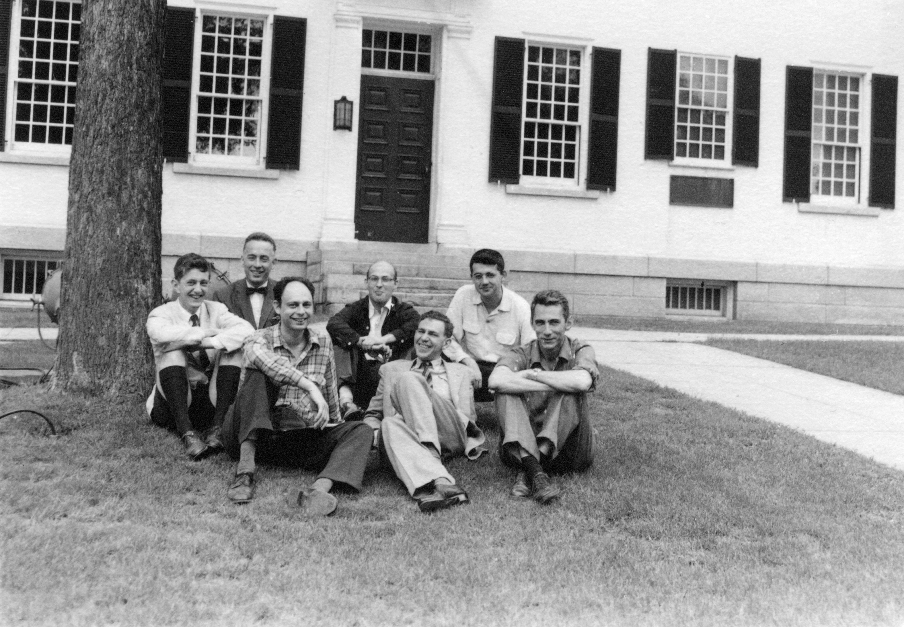
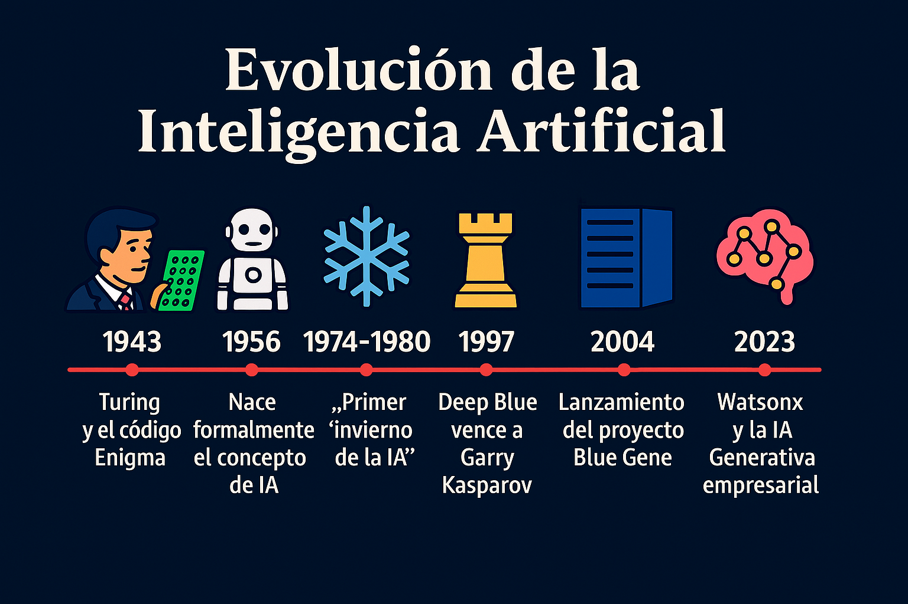

Las ideas que dieron origen
a la inteligencia artificial comenzaron a desarrollarse durante la
primera mitad del siglo XX. Matemáticos y filósofos buscaban comprender
si el razonamiento humano podía representarse mediante reglas lógicas y
procesos matemáticos. Este interés creció junto con el desarrollo de
las primeras computadoras electrónicas.
Uno de los científicos más importantes de esta etapa fue Alan Turing.
En 1950 publicó un trabajo en el que planteaba la posibilidad de que
una máquina pudiera “pensar”. Para estudiar esta idea propuso el famoso
Test de Turing, una prueba diseñada para determinar si una máquina
podía mantener una conversación de forma tan natural que una persona no
pudiera diferenciarla de otro ser humano. Las ideas de Turing se
consideran fundamentales para el nacimiento de la inteligencia
artificial mode.

Nacimiento oficial de la IA (1956)
El término “Inteligencia Artificial” apareció oficialmente en 1956 durante la Conferencia de Dartmouth, celebrada en Estados Unidos. En esta reunión participaron investigadores como John McCarthy, Marvin Minsky y Claude Shannon.
Los científicos de aquella época tenían grandes expectativas y pensaban
que en pocos años las máquinas podrían resolver problemas complejos
igual que los humanos. A partir de entonces comenzaron a desarrollarse
programas capaces de jugar ajedrez, resolver ecuaciones matemáticas y
demostrar teoremas lógicos. Estos primeros avances generaron mucho
entusiasmo en universidades y centros de investigación.

Durante
las décadas de 1960 y 1970 la inteligencia artificial avanzó lentamente
debido a las limitaciones tecnológicas de la época. Las computadoras
eran poco potentes y tenían una capacidad de memoria muy reducida.
Además, muchos programas funcionaban únicamente en situaciones
específicas y no podían adaptarse a nuevos problemas.
Con el tiempo, las expectativas exageradas provocaron decepción entre
gobiernos e instituciones que financiaban los proyectos. Como
consecuencia, se redujeron las inversiones y el interés en la
investigación. Estos periodos de crisis fueron conocidos como los
“inviernos de la IA”, ya que el desarrollo de esta tecnología se
ralentizó considerablemente.
En los años 80 surgieron los
llamados sistemas expertos, programas diseñados para imitar el
conocimiento y las decisiones de especialistas humanos. Estos sistemas
utilizaban grandes cantidades de reglas programadas manualmente para
resolver problemas concretos.
Los sistemas expertos comenzaron a utilizarse en áreas como la
medicina, la ingeniería y la industria. Por ejemplo, algunos podían
ayudar a diagnosticar enfermedades o analizar problemas técnicos en
empresas. Aunque estos programas demostraron que la IA podía tener
aplicaciones útiles, también tenían limitaciones importantes porque no
podían aprender por sí mismos ni adaptarse fácilmente a nuevas
situaciones.
En las décadas de 1990 y 2000 se produjo un cambio muy importante con el desarrollo del Aprendizaje Automático.
A diferencia de los sistemas anteriores, estos algoritmos podían
aprender a partir de datos y mejorar su rendimiento con la experiencia.
El aumento de la capacidad de las computadoras y la expansión de
Internet permitieron disponer de enormes cantidades de información para
entrenar sistemas inteligentes. Un acontecimiento histórico ocurrió en
1997, cuando la supercomputadora Deep Blue de IBM derrotó al campeón mundial de ajedrez Garry Kasparov. Este hecho mostró que las máquinas podían superar a los humanos en tareas intelectuales muy complejas.
A partir de 2010 la inteligencia artificial experimentó un crecimiento extraordinario gracias al desarrollo del Aprendizaje Profundo y de las Redes Neuronales Artificiales.
Estas tecnologías están inspiradas en el funcionamiento del cerebro
humano y permiten que las máquinas identifiquen patrones complejos en
grandes volúmenes de datos.
Gracias a estos avances, la IA logró mejorar en reconocimiento facial,
traducción automática, asistentes virtuales y conducción autónoma. En
2016, el programa AlphaGo de DeepMind venció al campeón mundial de Go Lee Sedol, un logro considerado histórico por la complejidad estratégica de ese juego.
Hoy
en día la inteligencia artificial forma parte de numerosos ámbitos de
la sociedad. Se utiliza en aplicaciones de navegación, plataformas de
entretenimiento, sistemas bancarios, medicina, educación y redes
sociales. Además, la aparición de modelos generativos como ChatGPT ha permitido crear herramientas capaces de generar textos, imágenes, música y código informático.
Sin embargo, el crecimiento de la IA también ha generado preocupaciones
relacionadas con la privacidad, el uso de datos, los sesgos
algorítmicos y el impacto en el empleo. Por ello, muchos gobiernos y
organizaciones internacionales trabajan en normas y regulaciones para
asegurar un uso responsable de esta tecnología.
